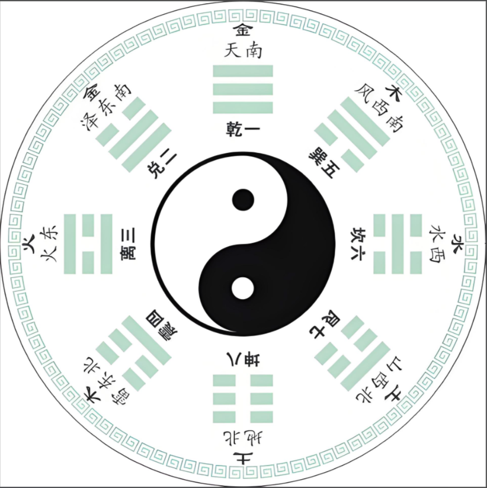

易经数字占卜
傅佩荣三位数起卦法 · 先天八卦取余定卦
先天八卦方位图

起卦
心里默想希望知道未来的走势与问题，然后输入三个任意三位数
数一 ①
定下卦
数二 ②
定上卦
数三 ③
定动爻
✦ 起 卦
↺ 重置
运算拆解
卦象
卦辞详解
专家详解
四项断语
之卦（变卦）
数字起卦禁忌
心神不定不占
情绪波动剧烈、心绪烦乱时卦象易失真。
不反复占问
既已得卦不宜反复追问。《蒙卦》云"再三渎，渎则不告"。同一问题至少间隔三个月。
不诚不占
怀疑或戏谑心态起卦，结果无参考价值。
违法悖德不占
占卜应为正道提供指引。
酒后不占
心神不清时起卦不准。
子时不占
（23:00–1:00）传统认为阴阳交替卦象不稳。
三位数只测小事
数字卦以简驭繁，适合日常小事占问。重大决策建议用大衍筮法（蓍草法）占断。
极端天气不占
雷雨大风等天地气机紊乱之时起卦易受干扰。
关于傅佩荣三位数数字占卜法
起卦原理
随意报出三个三位数，第一个数定下卦、第二个数定上卦、第三个数定动爻。分别除以 8（或 6）取余数，按先天八卦数对应卦象。此法源自傅佩荣教授对易经占筮的简化，保留了传统大衍之数法的核心逻辑。
先天八卦数
乾一☰、兑二☱、离三☲、震四☳、巽五☴、坎六☵、艮七☶、坤八☷
除 8 余 0 取坤卦；除 6 余 0 取第六爻动。
⚖️ 理性提示：
易经占卜为中华传统文化遗产，本工具仅供文化参考与心理指引，不构成绝对宿命判定。本质不是算命预知，是借助易经原文哲理帮自己理性梳理选择、规避风险，仅供参考。译文主要来源：中华书局《周易》（杨天才、张善文译注），参考傅佩荣《易经入门》、倪海厦《天纪》、曾仕强《易经的智慧》。